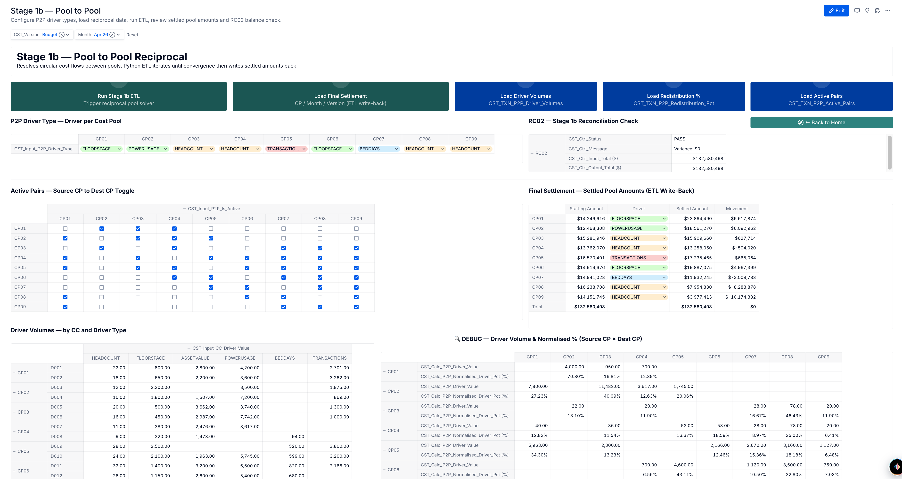
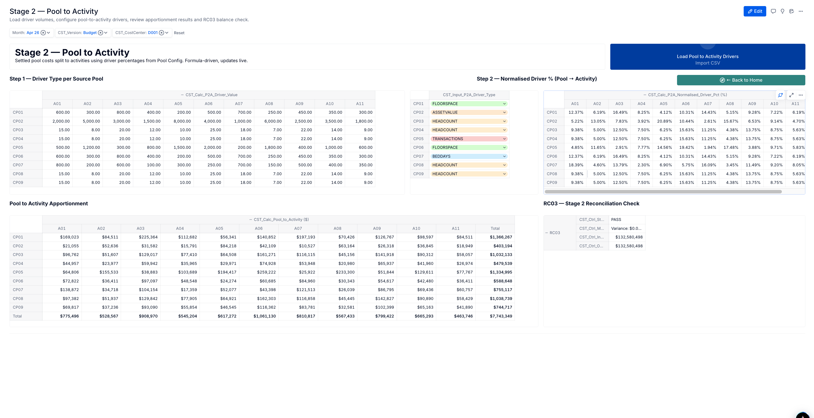
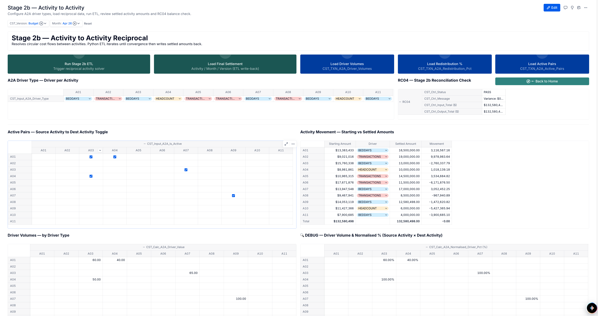
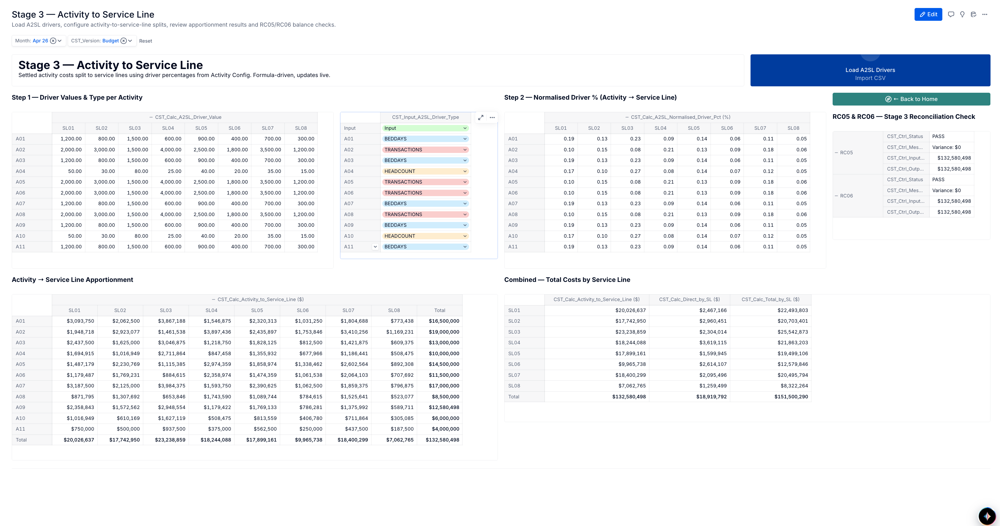

Open methodologyPigmentCost allocation
Cost apportionment in Pigment
A five-stage sequential engine that turns raw General Ledger balances into fully reconciled cost by service line — routed through cost pools and activities, settled reciprocally, and checked at every step.

CST Home Board — Process overview and navigation to all stages
The apportionment chain
Direct bypass — accounts classified Direct skip stages 1–3 and post straight to service lines, rejoining the total at the end.
05 — The engine
The five-stage apportionment chain
1
Account → Pool
Distribute raw account balances to cost pools
Board Stage 1 — Account to Pool

Stage 1 Board — Account to Pool
1b
Pool → Pool
Reciprocal settlement between cost pools
Board Stage 1b — Pool to Pool

Stage 1b Board — Pool to Pool Reciprocal Settlement
2
Pool → Activity
Distribute settled pool cost to business activities
Board Stage 2 — Pool to Activity

Stage 2 Board — Pool to Activity
2b
Activity → Activity
Reciprocal settlement between activities
Board Stage 2b — Activity to Activity

Stage 2b Board — Activity to Activity Reciprocal
3
Activity → Service Line
Terminal allocation to service lines
Board Stage 3 — Activity to Service Line

Stage 3 Board — Final Allocation to Service Lines